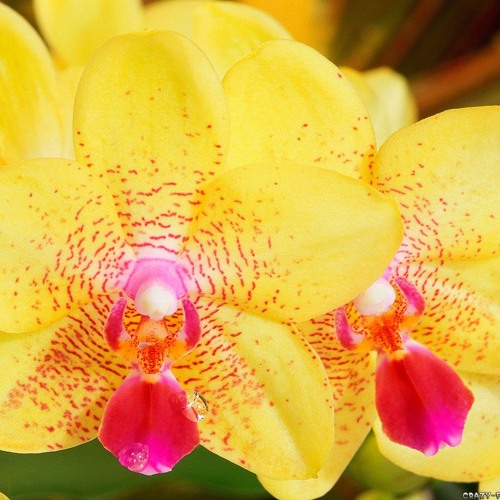
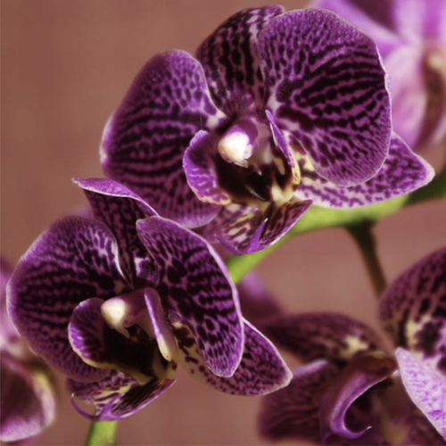
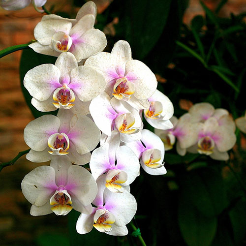
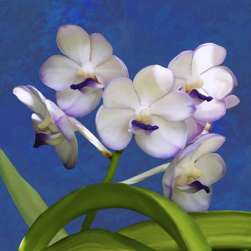
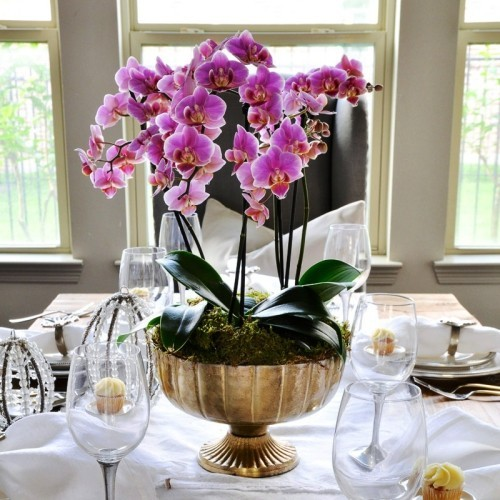
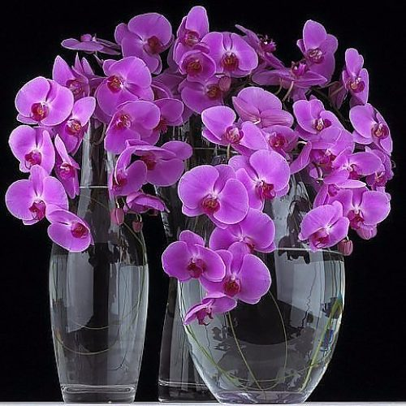

Орхидеи – экзотические красивые растения, которые очень популярны, и их разводят как декоративные комнатные цветы. Многие виды орхидей росли в дикой природе. Они были взяты в качестве основы для выведения новых сортов. Каждый сорт имеет свою форму, расцветку и иные особенности.Среди орхидных каждый вид является уникальным и неповторимым, очень сложно выбрать тот сорт, который можно назвать самой красивой орхидеей.Орхидеи – это одни из красивейших экзотических цветов, которые растут на нашей планете и относятся к самому крупному семейству однодольных растений.
  Для жителей мегаполиса орхидеи чаще всего представлены на прилавках магазинов, подоконниках квартир, либо на выставках. Они кажутся экзотикой, произрастающей в жарких лесах Амазонки.На самом деле орхидея в дикой природе — достаточно распространенное и выносливое растение, легко приспосабливающееся к любым условиям. Встречаются растения практически по всей планете, в любых климатических зонах, за исключением Антарктиды. На территории бывшего СССР встречаются порядка 49 видов этих растений. Бесспорно, больше всего встречается их в тропических лесах, где природа создала самые благоприятные условия: высокий процент влажности, циркуляции воздушных потоков, защиты от палящего солнца.
  Сегодня в доме вырастить орхидею можно без труда, но откуда она появилась в мегаполисах? Сама страна происхождения цветка доподлинно неизвестна, но первые упоминания встречается в рукописях Китая, датированные 500 г. до н. э. По историческим справкам знаменитый философ Конфуций писал, что запах цветка напоминает слова любви влюбленных сердец.Также в Китае учеными найден манускрипт, датированный 700 г. до н. э., в котором детально описано, как художник В. Мей культивировал цветок в маленьком горшке. С тех времен люди во всем мире узнали об этом удивительном цветке, о его красоте, запахе и лечебных свойствах. Но, наверное, самое красивое название цветку дал древнегреческий Теофраст, философ и мыслитель, отыскав растение с псевдобульбами, он нарек его «Orchis». В переводе с языка древних греков это переводится как «яичко». А происходило все это в 300 в. до н. э.
В природе размножением данного вида специально никто не занимался, они растут и размножаются сами по себе. В тропиках их можно встретить практически на каждом углу, они могут свисать с любой поверхности, в которой можно просто закрепить корни. В самой розетке листьев обязательно выбивается цветонос, на котором будут расположены либо цветы, либо семена. Корневая система у эпифитов мощная, она имеет некоторые утолщения, в которых накапливаются влага и питательные соединения. Самым благоприятным регионом произрастания считаются тропики, когда природные условия, температура и влажность, достаток света творят настоящие произведения цветочного искусства, поражая расцветками и формами.
Домашние экземпляры могут быть не только такими, что произрастают в естественной среде, также выведены гибридные разновидности. Они нередко представляют собой результат долгой и кропотливой работы селекционеров. Плюс ко всему, условия, которые существуют для цветка, невозможно воссоздать в домашних условиях квартир и домов. Ранее любители этих цветков создавали максимально приближенные к природным условия содержания и развития цветка, но это был слишком кропотливый труд. Поэтому постепенно селекционеры выводили новые сорта, менее требовательные к условиям, способные комфортно себя чувствовать в квартире.Сегодня в домах и квартирах можно встретить виды орхидей, которые приспособились расти не на деревьях, а в грунте. И ценят их как за красоту, так и за неприхотливость.